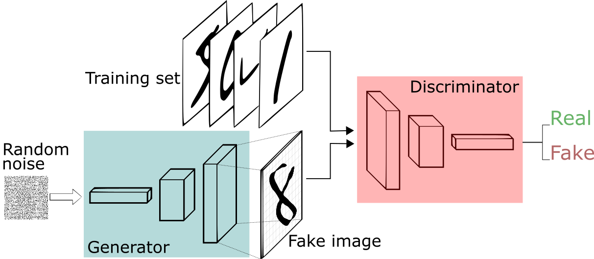
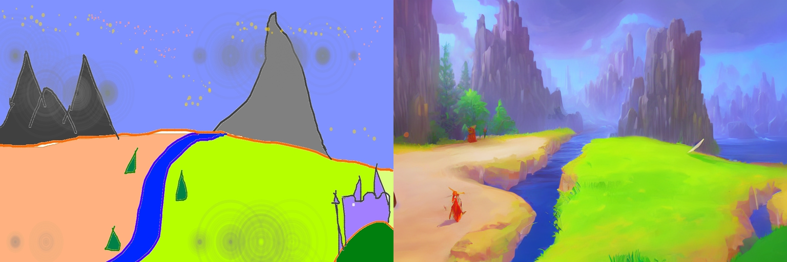
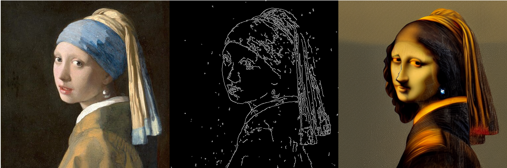

AI image generation II
In AI Image Generation I we mentioned GANs without going into details. In this chapter, we will take a closer look at them. We will also briefly touch on image augmentation.
Generative Adversarial Nets (GAN)
Generative Adversarial Nets, as first proposed by Goodfellow et al. (2014), are a class of generative models that can be used to generate new data samples from a given dataset. They consist of two components: a generator and a discriminator. The generator takes random noise as input and tries to produce realistic-looking data samples, while the discriminator takes data samples as input and tries to distinguish between real and fake samples. The generator and discriminator are trained simultaneously in a game-theoretic framework, with the goal of minimizing the difference between the distribution of real and fake samples. To use the authors own words:
“The generative model can be thought of as analogous to a team of counterfeiters, trying to produce fake currency and use it without detection, while the discriminative model is analogous to the police, trying to detect the counterfeit currency. Competition in this game drives both teams to improve their methods until the counterfeits are indistiguishable from the genuine articles.”
While the rest of the paper goes into mathematical depth and is not really recommendable for the casual reader, the basic concept behind it is surprisingly simple. The following figure illustrates the concept:

The generator is usually fed with noise, that is then transformed into a latent space, comparable with the embeddings, we talked about earlier. This latent vector is then passed through the generator network to generate an image. So, in this framework, the generator is analogue to the decoder of a VAE and the discriminator is analogue to the encoder, transferring the input data into a latent space and then using a classification head to decide whether the input is real or fake.
Usually, GANs make heavy use of convolutional neural networks (CNN) in both the generator and discriminator part, but in principle they can use any architecture. Additionally, while they were developed in the context of image generation, they are not limited to this domain and have been used for text generation as well.
Challenges
While GANs have shown promising results in various applications, they also come with their own set of challenges. Some of these include:
- They tend to be unstable in training, often requiring careful tuning of hyperparameters and training techniques to achieve good performance. One possible solution is to first train on smaller images and then later in the training process scale up the size of the images.
- If the discriminator is too bad early on, a situation can emerge where, by accident, one or a few classes of possible generated output perform better than others. This can lead to mode collapse, where the generator only produces samples from this class and ignores all other classes. In the example of the MNIST dataset, it could learn to only produce images of the number 5. In the original paper, this is referred to as the “helvetica scenario”.1 To avoid mode collapse, often the discriminator is trained more often then the generator to make it better. However, this can lead to the following problem.
- The generator and discriminator can get stuck in a state where the generator produces low-quality samples that are easily distinguishable from real data, while the discriminator becomes too good at distinguishing between real and fake samples. In this case, it will be very hard for the generator to improve its performance over time. This is often referred to as vanishing gradients. To avoid this, techniques like Wasserstein GANs (WGAN) have been proposed, which use a different loss function that can help stabilize training and prevent mode collapse.
- They can be computationally expensive to train, especially when dealing with high-dimensional data such as images.
1 Apparently, this is a reference to a british parody science show, see here.
Variants of GANs
There are many variants of GANs that have been proposed in the literature to address some of these challenges and improve their performance. Some examples include:
- Deep Convolutional Generative Adversarial Networks (DCGAN), which use convolutional layers in both the generator and discriminator to generate high-quality images.
- Wasserstein GAN (WGAN), which uses the Wasserstein distance as a loss function instead of the traditional cross-entropy loss to improve stability and convergence properties.
- StyleGAN, which uses a novel architecture that allows for fine-grained control over the style and content of generated images. It also introduces a new technique called style mixing, which allows for the creation of new styles by combining existing ones.
- BigGAN, which uses a large batch size and spectral normalization to improve stability and convergence properties.
- Progressive Growing GAN (PGGAN), which gradually increases the resolution of generated images over time to improve quality and stability.
- CycleGAN, which uses a cycle consistency loss to enable unsupervised image-to-image translation between two domains without the need for paired data.
- StarGAN, which enables unsupervised image-to-image translation between multiple domains by learning a single mapping function that can transform images from one domain to any other domain.
Train one yourself!
(or, at least, try it. GANs are notoriously bad to train, also there are hardware concerns.)
- implement a simple GAN architecture in pytorch (you can use this noteook on kaggle) and train it on the MNIST dataset
- Have a look at this GAN zoo implemented in pytorch. Find one that might be interesting for your use case.
- (optional) train that one on this or another dataset (see the pytorch vision dataset page for datasets already implemented in pytorch.)
No need to upload to Moodle this time.
(Generative) approaches for image dataset augmentation
Image augmentation is used to generate more training images a limited number of original training images. This can help improve the performance of machine learning models by increasing the size and diversity of the training data, which can help prevent overfitting and improve generalization. Image augmentation techniques can be applied during the preprocessing stage of the machine learning pipeline, before the data is fed into a model for training.
Classical image augmentation
There are many different image augmentation techniques that can be used to generate new training images from existing ones. Some common techniques include:
- Random cropping and resizing: This involves randomly selecting a region of an image and resizing it to a fixed size, which can help improve the robustness of models to variations in object scale and position.
- Flipping and rotation: These simple transformations can help increase the amount of training data by creating new images that are similar but not identical to the original ones.
- Color jittering: This involves randomly adjusting the brightness, contrast, saturation, or hue of an image, which can help improve the robustness of models to variations in lighting and color.
- Elastic transformations: These involve applying a series of small, random deformations to an image, which can help increase the amount of training data by creating new images that are similar but not identical to the original ones.
- Cutout: This involves randomly masking out a region of an image with a fixed size and filling it with a constant value (e.g., black or white), which can help improve the robustness of models to occlusions and other types of noise.
- Mixup: This involves combining two images in a weighted manner, along with their corresponding labels, to create a new image and label pair. This can help increase the amount of training data by creating new examples that are intermediate between existing ones.
Most of these are already implemented in pytorch’s torchvision.transforms.v2 module.
Let’s have a look!
- Have a look at the datasets in the pytorch vision dataset page and find one that might be interesting for you.
- Load that dataset with pytorch’s
DataLoaderclass, apply some transformations to it using the torchvision.transforms.v2 module and visualize some of the results.
Generative image augmentation
GANs can be used for image augmentation as well (Liu & Hu, n.d.). They can generate new images that are similar to the original ones but not identical, which can help increase the size and diversity of the training data. GANs can be trained on a dataset of real images, and then used to generate new images by sampling from the latent space of the generator network. The generated images can then be added to the training set to improve the performance of machine learning models.
There are, of course, techniques other than GANs to augment existing image datasets using generative models. One example are diffusers, we talked about last time. Trabucco et al. (2023) make the case for using these for data augmentation.
In the following, we will introduce some types of image augmentation using diffusers, without claiming this to be an exhaustive list.
Inpainting
When using inpainting, a section of the image is masked and then the model is prompted to fill the gap. This is most often used to remove unwanted content from images.
Image to image
In this case, an image is given to the model in addition to the prompt, conditioning the model to generate a specific output. This can be used to generate images from sketches or change the artistic style of a painting.

Another way of generating an image from another image is to first generate a description from an image and then using it as a prompt to generate another image. Hopefully, the second image will be similar to the initial image.
Image variation
There is also a version of stable diffusion on huggingface that is finetuned on image variation. At first glance the result is underwhelming, but give it a shot!
ControlNet
Another type of image-to-image generation is ControlNet. Here, you would typically give the model a prompt and in addition an sketch, human pose or canny edge to condition the model. In the example given below, a canny sketch is made from a painting, then a new painting is generated based on the canny sketch and a prompt detailing the desired image (in this case “Mona Lisa”)

Give it a go!
- Open a notebook, locally or on google colab.
- Test the generative image augmentation techniques and models introduced above.
- Upload your notebook to Moodle.